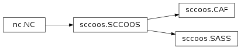

Text2NC’s documentation¶
Guide¶
import sccoos c = sccoos.CAF() print c.ncpath print c.logsdir c.text2nc_all()
Notes¶
- change ncpath(s) in __init__ to /data (currently using local home)
- put createVariable in text
Class Inheritance
Graphviz Workflow
![digraph Workflow {
labelloc="t";
label="create NetCDFs from texts"
compound=true;
start -> text2nc_all[lhead=cluster__text2nc_all];
start -> text2nc_append[lhead=cluster__text2nc_append];
subgraph cluster__text2nc_all {
label="text2nc_all" shape=box color=yellow href="#sccoos.SCCOOS.text2nc_all"
text2nc_all [style="invis"];
forall [shape=diamond, label="for each log file"];
}
subgraph cluster__text2nc_append {
label="text2nc_append" shape=box color=yellow href="#sccoos.SCCOOS.text2nc_append"
text2nc_append [style="invis"];
getLastNC [shape=box,style=filled, color=green];
getLastDateNC [ shape=box,style=filled, color=green];
getLastNC -> getLastDateNC;
foreach [shape=diamond, label="for each: new file\n since getLastDateNC"];
getLastDateNC -> foreach;
}
forall -> text2nc [lhead=cluster__text2nc];
foreach -> "pandas.read_csv"[lhead=cluster__text2nc];
subgraph cluster__text2nc {
label="text2nc" color=yellow shape=box
text2nc [style="invis"];
"pandas.read_csv";
getLastNC2 [label="getLastNC", shape=box,style=filled, color=green];
"pandas.read_csv"-> getLastNC2;
getLastDateNC2 [label="getLastDateNC", shape=box,style=filled, color=green];
getLastNC2 -> getLastDateNC2 ;
fileSizeChecker [shape=box, color=green];
subgraph cluster__dataToNC {
label="dataToNC" color=green shape=box
dataToNC [style="invis"];
isfile [shape=diamond, label="file exists"];
isfile -> newNC [label="No"];
newNC [label="New nc file ('w')"];
newNC -> createNCshell;
createNCshell [shape=box,style=filled, color=yellow];
createNCshell -> addNCshell;
addNCshell [shape=box,style=filled, color=green, href="#sccoos.SCCOOS.addNCshell"];
addNCshell -> NC;
isfile -> appdNC [label="Yes"];
appdNC [label="Append to nc file ('a')"];
appdNC -> NCtimeMeta;
NCtimeMeta [shape=box,style=filled, color=green];
NCtimeMeta -> ISOduration;
ISOduration [shape=box,style=filled, color=green];
ISOduration -> NC;
NC [shape=parallelogram];
}
}
NC -> fileSizeChecker;
getLastDateNC2 -> dataToNC[lhead=cluster__dataToNC] ;
}](_images/graphviz-1a9e0d61669529651279848772244ec5a1befa30.png)
![digraph Workflow {
labelloc="t";
label="Update existing NetCDF(s)' metadata"
compound=true;
start -> updateAll[lhead=cluster__updateNCattrs_all];
start -> updateNCattrs_single;
updateNCattrs_single [shape=box,style=filled, color=yellow, href="#nc.NC.updateNCattrs_single"];
subgraph cluster__updateNCattrs_all {
label="updateNCattrs_all" shape=box color=yellow href="#nc.NC.updateNCattrs_all"
updateNCattrs_all [style="invis"];
updateAll [shape=diamond, label="for each nc file"];
}
updateAll -> updateNCattrs_single;
}](_images/graphviz-66ae2e6de437ca46b4b228a5c1f1a395579ce1c9.png)
Ex PlantUML
Contents¶
-
class
nc.NC[source]¶ Bases:
objectClass documentation: This root ‘nc’ class is an abstract class. It will be the base to make a netcdf file. Its children are ‘cdip’ and ‘sccoos’ (grandchildren ‘sass’ & ‘caf’)
Note
Assume: nc files end in YYYY.nc‘time’ variable in data/ncfile-
NCtimeMeta(ncfile)[source]¶ Update time metadata values: Calculate, SPECIFIC to file. ISO 8601 Time duration
-
addNCshell_NC(ncfile)[source]¶ When creating new nc file, at some standard metadata
Parameters: ncfile (str) – file name of netCDF to be made, sans-path (uses ncpath)
-
createNCshell(ncfile)[source]¶ Create a shell of netCDF file (variables, attributes), without data
Parameters: ncfile (str) – file name of netCDF to be made, sans-path (uses ncpath)
-
dataToNC(ncName, subset, lookup)[source]¶ Take dataframe and put in netCDF (new file or append). Assumes there’s a ‘time’ variable in data/ncfile
-
fileSizeChecker(ncfilepath)[source]¶ filesize checker/resizer as a NC method. Set as 1e6, could be make default and pass as arg
-
text2nc(filename)[source]¶ read texts in specific format and put in panda’s dataframe, to be put in nc files
Parameters: filename (str) – path+filename of text file to be read (already joined with logsdir) Warning
When reading file, before adding to NC. Data prior to
nc.NC.getLastDateNC()is truncated so previously added data is not duplicated... Should new data contain older data (i.e. filling a gap), this will be truncated as well.
-
text2nc_all()[source]¶ Loop through ALL log/text files in logsdir‘s subdirectories and put in NC files
-
-
class
sccoos.SCCOOS[source]¶ Bases:
nc.NCClass to be used for SCCOOS related netCDFs
-
ISOduration(minTimeS, maxTimeS)¶ returns ISO duration (days, hrs, mins, secs)
-
NCtimeMeta(ncfile)¶ Update time metadata values: Calculate, SPECIFIC to file. ISO 8601 Time duration
-
addNCshell_NC(ncfile)¶ When creating new nc file, at some standard metadata
Parameters: ncfile (str) – file name of netCDF to be made, sans-path (uses ncpath)
-
createNCshell(ncfile)¶ Create a shell of netCDF file (variables, attributes), without data
Parameters: ncfile (str) – file name of netCDF to be made, sans-path (uses ncpath)
-
dataToNC(ncName, subset, lookup)¶ Take dataframe and put in netCDF (new file or append). Assumes there’s a ‘time’ variable in data/ncfile
-
fileSizeChecker(ncfilepath)¶ filesize checker/resizer as a NC method. Set as 1e6, could be make default and pass as arg
-
getLastDateNC(ncFilename)[source]¶ Read a netCDF file and return the lastest time value in epoch/seconds
Parameters: ncFilename (str) – path of netCDF file Returns: latest time value in epoch/seconds Return type: number ( float), change toint?
-
text2nc(filename)¶ read texts in specific format and put in panda’s dataframe, to be put in nc files
Parameters: filename (str) – path+filename of text file to be read (already joined with logsdir) Warning
When reading file, before adding to NC. Data prior to
nc.NC.getLastDateNC()is truncated so previously added data is not duplicated... Should new data contain older data (i.e. filling a gap), this will be truncated as well.
-
text2nc_all()¶ Loop through ALL log/text files in logsdir‘s subdirectories and put in NC files
-
text2nc_append()¶ Append only the latest data to NC files. This looks at the lastest datetime recorded in a netcdf, then appends any recent data to netcdfs.
-
tupToISO(timeTup)¶ Only return Day, Hour, Min, Sec in ISO 8601 duration format
-
updateNCattrs_all()¶ loop through all nc files and apply updates to metadata
-
updateNCattrs_single(ncName)¶ on a single file: run when ONLY nc METADATA needs updating, NOT any data
Parameters: ncName (str) – file name of netCDF to be made, with path
-
-
class
sccoos.SASS[source]¶ Bases:
sccoos.SCCOOSClass for SCCOOS’s Automated Shore Stations. Currently, log files and netCDFs
Setting up SASS variables
Todo
- change ncpath (currently local for testing)
- move metadata to external text file(s)?
-
ISOduration(minTimeS, maxTimeS)¶ returns ISO duration (days, hrs, mins, secs)
-
NCtimeMeta(ncfile)¶ Update time metadata values: Calculate, SPECIFIC to file. ISO 8601 Time duration
-
addNCshell_NC(ncfile)¶ When creating new nc file, at some standard metadata
Parameters: ncfile (str) – file name of netCDF to be made, sans-path (uses ncpath)
-
addNCshell_SCCOOS(ncfile)¶
-
dataToNC(ncName, subset, lookup)¶ Take dataframe and put in netCDF (new file or append). Assumes there’s a ‘time’ variable in data/ncfile
-
fileSizeChecker(ncfilepath)¶ filesize checker/resizer as a NC method. Set as 1e6, could be make default and pass as arg
-
getLastDateNC(ncFilename)¶ Read a netCDF file and return the lastest time value in epoch/seconds
Parameters: ncFilename (str) – path of netCDF file Returns: latest time value in epoch/seconds Return type: number ( float), change toint?
-
getLastNC(prefix)¶ look at all nc file names and get last year
-
text2nc(filename)[source]¶ #previously dataframe2nc - Uses Panda’s
read_csv- Does a series of regular expressions (a.k.a. regex) - Uses QC methods from sassqc
-
tupToISO(timeTup)¶ Only return Day, Hour, Min, Sec in ISO 8601 duration format
-
updateNCattrs_all()¶ loop through all nc files and apply updates to metadata
-
updateNCattrs_single(ncName)¶ on a single file: run when ONLY nc METADATA needs updating, NOT any data
Parameters: ncName (str) – file name of netCDF to be made, with path
-
class
sccoos.CAF[source]¶ Bases:
sccoos.SCCOOSClass for SCCOOS’s Carlsbad Aqua Farm’s burkolator. Currently, log files and netCDFs
Setting up CAF variables
Warning
- for text2nc_append: use CAF_Latest folder
- for text2nc_all: use CAF_sorted‘s folder/subfolders (i.e.2016) which may need to be syncing/ files copied from CAF_2016 and CAF_Latest
-
ISOduration(minTimeS, maxTimeS)¶ returns ISO duration (days, hrs, mins, secs)
-
NCtimeMeta(ncfile)¶ Update time metadata values: Calculate, SPECIFIC to file. ISO 8601 Time duration
-
addNCshell_NC(ncfile)¶ When creating new nc file, at some standard metadata
Parameters: ncfile (str) – file name of netCDF to be made, sans-path (uses ncpath)
-
addNCshell_SCCOOS(ncfile)¶
-
dataToNC(ncName, subset, lookup)¶ Take dataframe and put in netCDF (new file or append). Assumes there’s a ‘time’ variable in data/ncfile
-
fileSizeChecker(ncfilepath)¶ filesize checker/resizer as a NC method. Set as 1e6, could be make default and pass as arg
-
getLastDateNC(ncFilename)¶ Read a netCDF file and return the lastest time value in epoch/seconds
Parameters: ncFilename (str) – path of netCDF file Returns: latest time value in epoch/seconds Return type: number ( float), change toint?
-
getLastNC(prefix)¶ look at all nc file names and get last year
-
tupToISO(timeTup)¶ Only return Day, Hour, Min, Sec in ISO 8601 duration format
-
updateNCattrs_all()¶ loop through all nc files and apply updates to metadata
-
updateNCattrs_single(ncName)¶ on a single file: run when ONLY nc METADATA needs updating, NOT any data
Parameters: ncName (str) – file name of netCDF to be made, with path